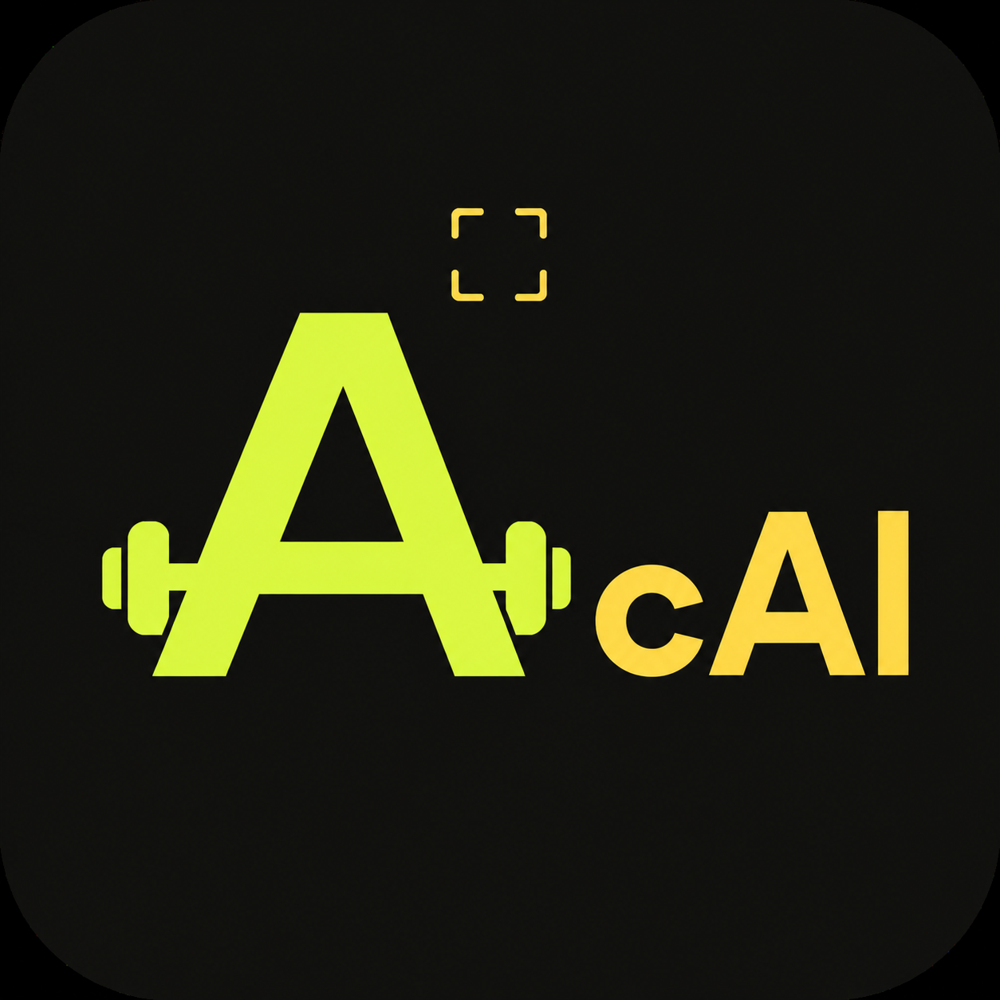

Sana göre antrenman
Seviyene ve hedeflerine uygun planlarla ne yapacağını düşünmeden harekete geç.

ARDIENFITCALANTRENMAN · BESLENME · GELİŞİM
Antrenmanını planla, öğününü tara ve tüm gelişimini tek bir sade deneyimde takip et.
AKILLI ANTRENMAN ✦ KALORİ ANALİZİ ✦ HEALTH CONNECT ✦ GELİŞİM GRAFİKLERİ ✦ AKILLI ANTRENMAN
TEK UYGULAMA, NET İLERLEME
Gereksiz karmaşa olmadan antrenman, beslenme ve gelişim takibi.
Seviyene ve hedeflerine uygun planlarla ne yapacağını düşünmeden harekete geç.
Öğününü seç, porsiyon ve makro değerlerini saniyeler içinde tahmini olarak gör.
Adım, aktif kalori, egzersiz ve ağırlık verilerini izninle tek görünümde takip et.
Haftalık, aylık, 3 aylık ve yıllık grafiklerle istikrarını ve değişimini incele.
KONTROL SENDE
Health Connect verileri cihazında işlenir. Galerinin tamamına değil, yalnızca seçtiğin fotoğrafa erişilir. Hesabını ve ilişkili verilerini dilediğin zaman silebilirsin.
YAKINDA GOOGLE PLAY'DE